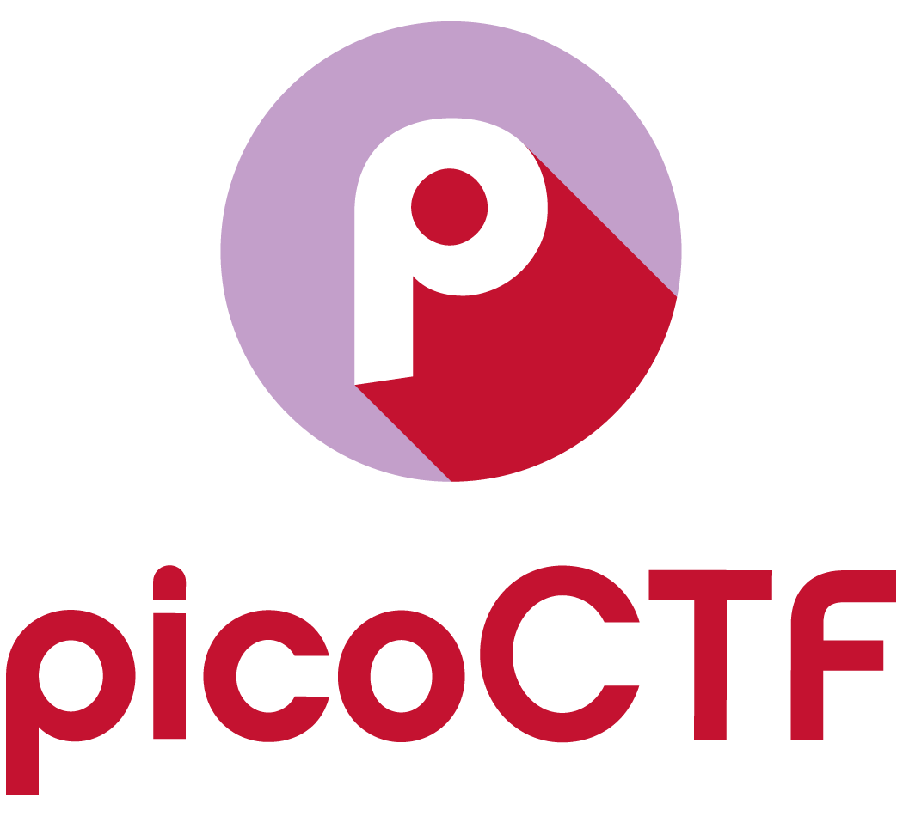

PicoCTF 2022 - Roboto Sans write up
Problem The flag is somewhere on this web application not necessarily on the website. Find it. Author: Mubarak Mikail Ans: picoCTF{Who_D03sN7_L1k5_90B0T5_718c9043} Solution: Enter the websi...
Read article